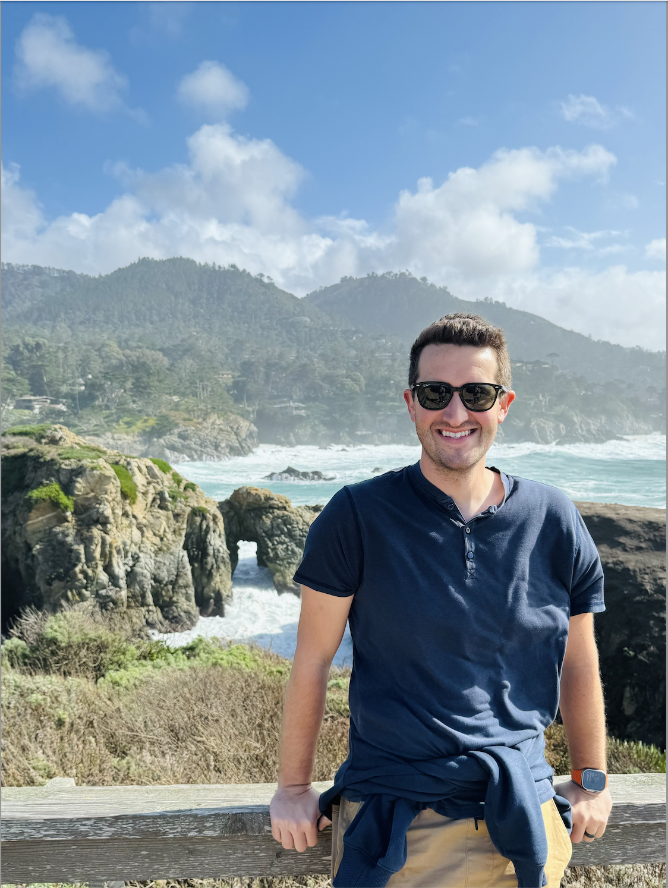

About Me
Hello, my name is Adam Taylor. I grew up in Modesto, Ca and live fairly close still. I work as an embryologist, and am learning how to design and create software for fun! I love being with my family, running and trying new foods!
Modesto
With a population of around 220,000 people, Modesto is a rich and vibrant agricultural community, nestled in the valley of California. Modesto is one of the largest agricultural communities in the United States with over 3$ billion in production per year, spread out over milk, almonds, chickens and walnuts.